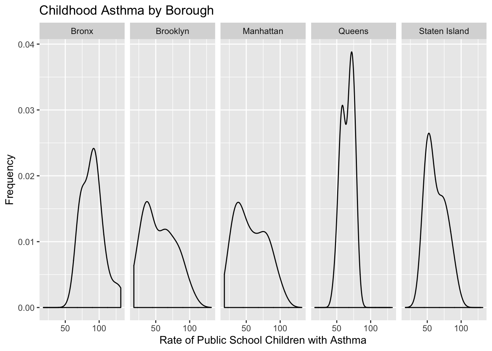
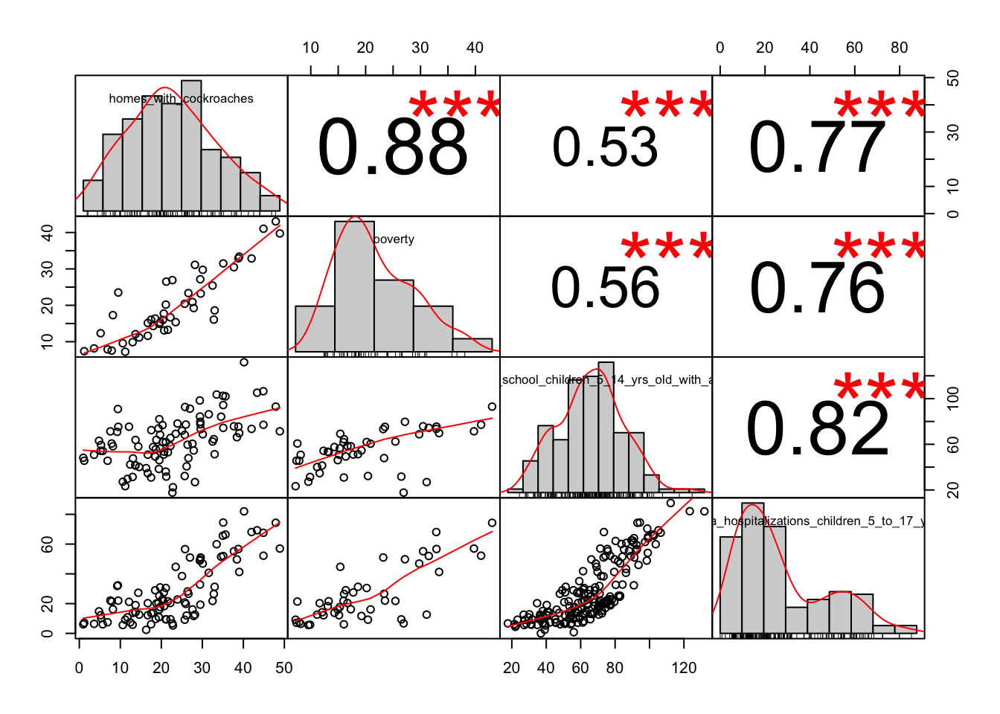

Asthma and Cockroaches: Final Report
Initial Questions
Based on existing literature discussed in our about page, we can see that cockroaches and related allergens could be correlated with prevalence of asthma in New York City. For example, the charts below show the distributions of cockroaches (left) and childhood asthma (right) by NYC borough. We are interested in exploring the relationship between cockroaches and asthma prevalence in New York City. To do so, we wanted to visualize the prevalence of roaches and asthma in New York as well as their correlations using what we have learned in the course so far. Using our tidied dataset described below, we explored these interests.
Data
We downloaded all available data from the NYC Gov Environmental & Health Data Portal. The Environmental & Health Data Portal houses data from a variety of sources such as the New York City Automated School Health Records, American Community Survey and New York City Housing and Vacancy Survey (HVS). Data from this portal are used to study how the environment affects health. We initially filtered the dataset to include all variables related to asthma, cockroaches and poverty before finalizing the dataset to include variables only related to public school children with asthma, asthma hospitalizations for children ages 5-17 years old, homes with cockroaches and poverty. Definitions for the variables were taken from the “Source Information” csv file downloaded with the dataset from the Environmental & Health Data Portal.
geo_type_name: Type of geographical area (i.e borough, UHF42)geo_join_id: Numeric ID of the geographical areageo_place_name: Name of the geographical areatime_period: Year for the data
Predictor
homes_with_cockroaches(Percent): Estimated number of households in an area that reported seeing at least one cockroach daily over the last month, divided by the number of households in the area, expressed as a percent.
Outcomes of interest
public_school_children_5_14_yrs_old_with_asthma(Rate): Number of public school children, aged 5-14 years, with a diagnosis of asthma that has been reported to NYC DOHMH during the current or previous school year, divided by the 5-14 year old population, per 1,000.asthma_hospitalizations_children_5_to_17_yrs_old(Rate): Number of asthma-related hospitalizations among NYC resident children aged 5 to 17 years, divided by the population of children 5 to 17 years old, using NYC DOHMH intercensal estimates; expressed as cases per 10,000 residents
Potential confounder
poverty(Percent): Estimated number of people for whom poverty status is determined, whose annual income falls below 100% of the federal poverty level, divided by the number of people for whom poverty status is determined, expressed as a percent.
Spatial geometries were taken from the NYC Health Department’s GIS Center. The map was built using the United Hospital Fund (UHF) neighborhood code key from NYC Health.
Loading and tidying the data
all_data =
read.csv(file = "./final_data/all_available_data.csv") %>%
janitor::clean_names() %>%
filter(name %in% c("Homes with Cockroaches",
"Poverty",
"Public School Children (5-14 Yrs Old) with Asthma",
"Public School Children (5-14 Yrs Old) with Persistent Asthma",
"Asthma Hospitalizations (Children 5 to 17 Yrs Old)"),
geo_type_name %in% c("UHF42", "Borough"),
measure %in% c("Percent", "Rate")
) %>%
mutate(geo_join_id = as.character(geo_join_id),
geo_join_id = if_else(geo_place_name == "Bensonhurst - Bay Ridge", "209", geo_join_id),
geo_join_id = as.factor(geo_join_id)) %>%
pivot_wider(
names_from = name,
values_from = data_value
) %>%
mutate(time_period = dplyr::recode(time_period, "2010-2011" = "2011", "2011-2012" = "2012", "2012-2013" = "2013", "2013-2014" = "2014", "2010-14" = "2011")) %>%
filter(time_period %in% c("2011", "2012", "2013", "2014")) %>%
janitor::clean_names() %>%
dplyr::select(geo_type_name, geo_join_id, time_period, geo_place_name, measure, indicator_id, homes_with_cockroaches, poverty, public_school_children_5_14_yrs_old_with_asthma, public_school_children_5_14_yrs_old_with_persistent_asthma, asthma_hospitalizations_children_5_to_17_yrs_old)
df1 = all_data %>%
dplyr::select(geo_type_name, geo_join_id, time_period, geo_place_name, measure, indicator_id, homes_with_cockroaches) %>%
drop_na()
df2 = all_data %>%
dplyr::select(geo_type_name, geo_join_id, time_period, geo_place_name, measure, indicator_id, poverty) %>%
drop_na()
df3 = all_data %>%
dplyr::select(geo_type_name, geo_join_id, time_period, geo_place_name, measure, indicator_id, public_school_children_5_14_yrs_old_with_asthma) %>%
drop_na()
df4 = all_data %>%
dplyr::select(geo_type_name, geo_join_id, time_period, geo_place_name, measure, indicator_id, public_school_children_5_14_yrs_old_with_persistent_asthma) %>%
drop_na()
df5 = all_data %>%
dplyr::select(geo_type_name, geo_join_id, time_period, geo_place_name, measure, indicator_id, asthma_hospitalizations_children_5_to_17_yrs_old) %>%
drop_na()
## Joining
tidy_asthma =
full_join(df1, df2, by = c("geo_type_name", "geo_join_id", "time_period", "geo_place_name")) %>%
full_join(df3, by = c("geo_type_name", "geo_join_id", "time_period", "geo_place_name")) %>%
full_join(df4, by = c("geo_type_name", "geo_join_id", "time_period", "geo_place_name")) %>%
full_join(df5, by = c("geo_type_name", "geo_join_id", "time_period", "geo_place_name")) %>%
dplyr::select(geo_type_name, geo_join_id, time_period, geo_place_name, homes_with_cockroaches, poverty, public_school_children_5_14_yrs_old_with_asthma, public_school_children_5_14_yrs_old_with_persistent_asthma, asthma_hospitalizations_children_5_to_17_yrs_old) %>%
mutate(time_period = as.numeric(levels(time_period)) [time_period],
geo_join_id = as.character(as.numeric(levels(geo_join_id)) [geo_join_id]),
geo_place_name = as.character(geo_place_name)) %>%
view()We downloaded the data as a csv file from the NYC Environmental & Health Data Portal and called the initial dataset all_available_data. We restricted our data to include boroughs and UHF42 neighborhoods as our geographical areas of interest and to include the indicators: homes_with_cockroaches, poverty public_school_children_5_14_yrs_old_with_asthma and asthma_hospitalizations_children_5_to_17_yrs_old.
Data for the rate of public school children with asthma were presented for a range of years (i.e. 2010-2011, 2011-2012, etc). For our analysis, we recoded these ranges into single years in order to 2011-2014. Data on cockroaches were only available for 2011 and 2014. Data on percent poverty in NYC were also presented in ranges and we chose 2010-2014 as our reference. We recoded this into a single year for 2011. Since the data for these four variables overlapped for the years 2011-2014, we restricted our analysis to these four years. Data for the rate of asthma hospitalizations among children ages 5-17 years old were available for all four years.
After recoding the years, separate dataframes were created for each of the four variables and then joined together in order to fill in the missing values (NAs) that first existed when filtering for these variables and years in the larger dataset. We called the tidied, joined dataset tidy_asthma and exported it as a csv file.
Our github repository is linked here.
Methods
The dataset we used was compiled using the Environmental and Health Dataset from the NYC Health Department. We selected variables based on our preliminary hypothesis regarding asthma, poverty, neighborhood, cockroaches, and school children. These analyses are exploring the correlations and relationships. The correlation matrix displays associations between all of our predictors and outcome to indicate any multicollinearity. The crude analysis shows the crude relationship between cockroach presence and childhood asthma. Finally, the linear model demonstrates the model with all of our predictors against our outcome.
The code for this page can be found here.
Preliminary Analysis
Cockroach and Asthma Distributions by Borough
Using our tidied dataset, we first looked at the distribution of homes with cockroaches and distribution of public school children, ages 5-14 years old, with asthma by NYC borough.
p1 =
tidy_asthma_sf_ll %>%
ggplot(aes(x = homes_with_cockroaches)) +
geom_density() +
facet_grid(~borough) +
labs(
x = "Percent of Homes with Cockroaches",
y = "Frequency",
title = "Cockroaches by Borough")
p2 =
tidy_asthma_sf_ll %>%
ggplot(aes(x = public_school_children_5_14_yrs_old_with_asthma)) +
geom_density() +
facet_grid(~borough) +
labs(
x = "Rate of Public School Children with Asthma",
y = "Frequency",
title = "Childhood Asthma by Borough")
p1
p2
Cockroaches and Asthma by Borough

To first assess if this issue was one worth looking into, we analyzed the cockroach and asthma relationship by borough. Our prediction was that boroughs with higher cockroach distributions would have higher asthma rates. These violin plots support our initial hypothesis with the Bronx having both the highest cockroach distribution and asthma rates.
Correlation Matrix

A correlation matrix was then compiled to analyze our other predictors. The correlation matrix displays the baseline association between each variable. All of the correlations between predictors and homes_with_cockroaches are above 0.53 which indicates a fairly strong positive correlation. Pearson r values between predictors and homes_with_cockroaches:
- Poverty: 0.88
- Public school children (5-14 years old) with asthma: 0.53
- Public school children (5-14 years old) with persistent asthma: 0.67
- Asthma hospitalizations of children (5-17 years old): 0.77
As we model build we will be aware of any multicollinearity from those variables with large correlations.
Crude Association between Childhood Asthma and Cockroaches in the Home
## Warning in time_period == c("2011", "2014"): longer object length is not a
## multiple of shorter object length
The crude relationship between childhood asthma and cockroaches in the home is demonstrated above across 2011 and 2014. As the percent of homes with cockroaches increases, so does the number of public school children with asthma. This is not a perfectly linear correlation, but on average, it is a positive linear correlation.
Additional Analysis
Table
## Warning in time_period == c("2011", "2014"): longer object length is not a
## multiple of shorter object length|
public school children 5 14 yrs old with asthma |
public school children 5 14 yrs old with asthma |
public school children 5 14 yrs old with asthma |
||||||||||
|---|---|---|---|---|---|---|---|---|---|---|---|---|
| Predictors | Estimates | CI | Statistic | p | Estimates | CI | Statistic | p | Estimates | CI | Statistic | p |
| (Intercept) | 39.51 | 30.85 – 48.17 | 9.06 | <0.001 | 32.72 | 18.54 – 46.90 | 4.80 | <0.001 | 43.81 | 13.08 – 74.55 | 2.97 | 0.008 |
| homes_with_cockroaches | 1.03 | 0.69 – 1.38 | 5.96 | <0.001 | 0.30 | -0.77 – 1.37 | 0.59 | 0.563 | -0.11 | -1.58 – 1.37 | -0.15 | 0.881 |
| poverty | 0.81 | -0.50 – 2.11 | 1.28 | 0.214 | 0.12 | -2.01 – 2.25 | 0.12 | 0.904 | ||||
| homes_with_cockroaches * poverty | 0.02 | -0.03 – 0.07 | 0.85 | 0.405 | ||||||||
| Observations | 94 | 24 | 24 | |||||||||
| R2 / R2 adjusted | 0.279 / 0.271 | 0.422 / 0.367 | 0.443 / 0.359 | |||||||||
| AIC | 821.102 | 201.623 | 202.770 | |||||||||
This table displays the values for each of our three potential models. The three columns of “Public School Children 5-14 Years Old With Asthma” show the intercept and slope values for each model.
- The first column shows the basic model with cockroaches against public school children with asthma. The \({r}^2\) value is 0.293, which is a weak positive relationship. The beta for cockroaches is significant with a p-value less than 0.001.
- The second column shows one adjusted model based on our first crude model. Here we experiment with a potential confounder, poverty, to improve the \({r}^2\) value and find a better fit of our data. There are 2 slopes, cockroaches and poverty. The \({r}^2\) value is 0.422 which is higher than the crude model. The betas here are not significant.
- The third column shows the adjusted model with an interaction term. There are 3 slopes and none of the betas are significant. The \({r}^2\) value is 0.443 which is higher than the previous model, but it could be higher.
- Future analyses should include demographic variables and their interactions to improve significance, the \({r}^2\) value, and decrease the AIC.
Discussion
In the process of analyzing the association between prevalence of cockroach in homes and asthma, we gained the following insights:
In particular, the strength of association between homes with cockroaches and poverty, as well as the association between homes with cockroaches and hospitalization, are rather strong, with correlations r=0.88 and r=0.77 respectively. This aligns with previous research done by the New York City Neighborhood Asthma and Allergy Study (NAAS), and other sources. Although the NYC Department of Health stated that the best way to manage asthma is through doctor’s visits, medication, avoiding triggers, and asthma management at school, this is not feasible for many people due to lack of access to high-quality healthcare, as discussed in this article.
In addition, the positive linear association between percent of children with asthma and percent of homes with cockroaches at home between years 2011 and 2014 provides further evidence that the percentage of school children with asthma is continuing to increase, as stated in this article. Visualization of asthma prevalence by neighborhood and by borough display this increase as well.
Visualization of geographic variation of cockroach and asthma prevalence can provide insight for different interventions–such as the one conducted in New Orleans– in target neighborhoods such as Crotona, Tremont, Hunts Point, and Mott Haven– all of which are located in the Bronx. However, it is interesting to note that Williamsburg, which is now known to be a rather affluent neighborhood, has high cockroach prevalence. This could point out to the fact that it is difficult to decrease number of cockroaches in an area, and thus other types of interventions need to be done to decrease number of children developing asthma.
Similar to previous research, there are several limitations, including not having and including all the confounding health and social risk factors.
Additional Observations
Using the shiny and leaflet packages, we created a visualization of homes with cockroaches in New York City neighborhood. By inputting boroughs and years, the map shows the percentage of homes that have reported seeing a cockroach every day for one month within neighborhoods. Based on this map, most cockroaches are seen in the Bronx, Queens, and Brooklyn, while neighborhoods in lower Manhattan, Staten Island, and closer to Long Island see a relatively lower percent of cockroaches. Switching between 2011 and 2014 (the years for which cockroach data was collected), we can see that the percentage of homes that see cockroaches have generally increased in Brooklyn and Queens.
The dashboard includes plotly bar charts showing asthma prevalence in boroughs and neighborhood among public school children aged 5 - 14 years old over a four-year period. Playing these graphs, we can see that asthma prevalence has generally increased each year from 2011 to 2014.